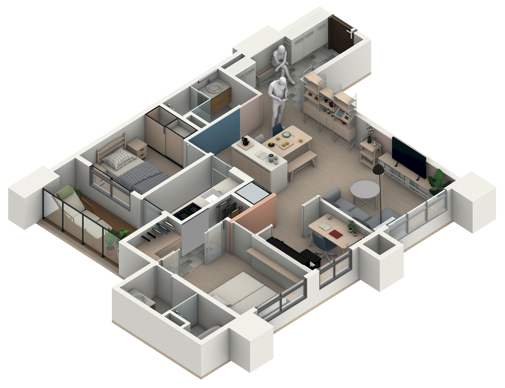
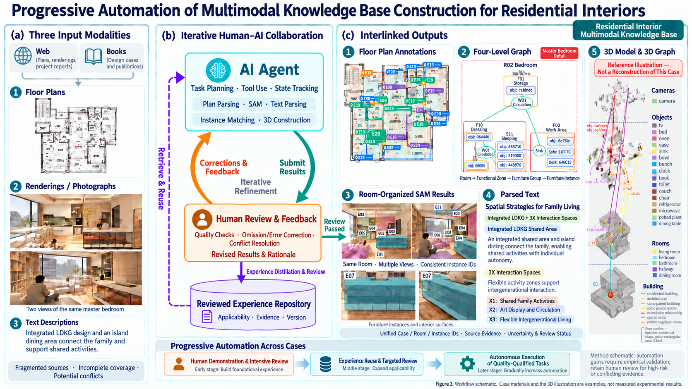
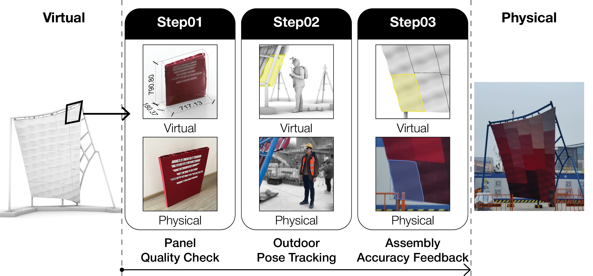
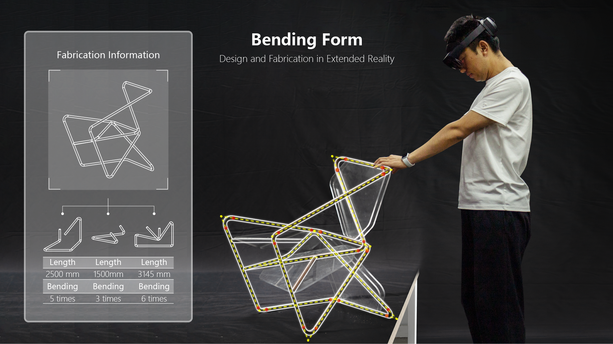
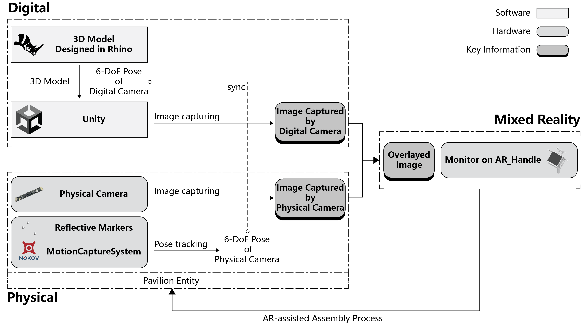
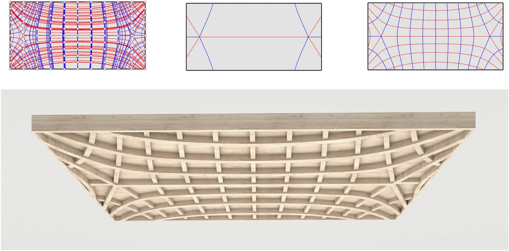
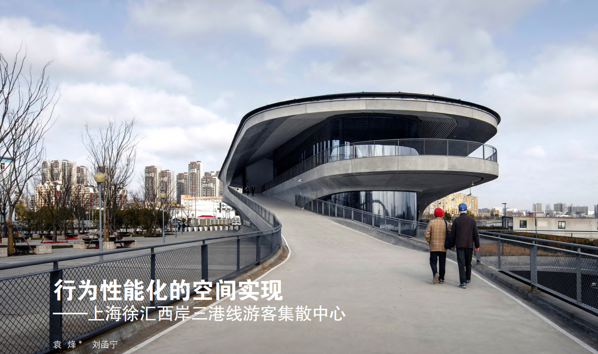
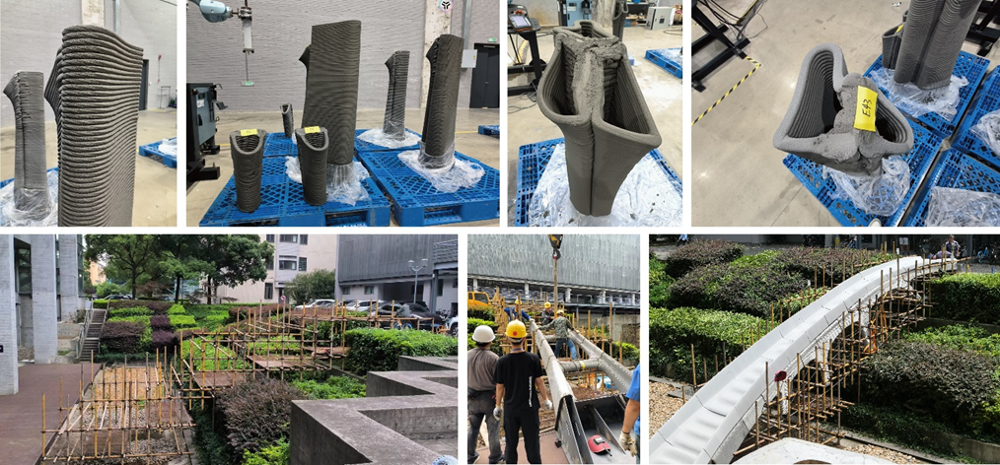
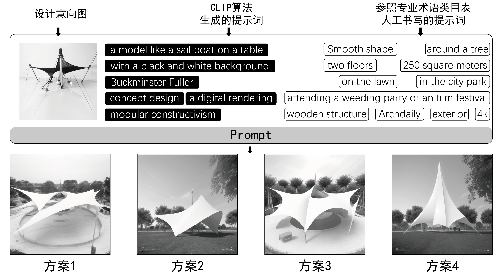
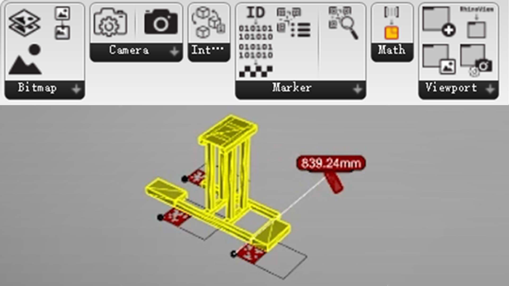

Tsinghua University Sep 2025–present
PhD student, Institute of Future Human Habitats, Shenzhen International Graduate School
Advisor: Peter John Russell
PhD Student, Tsinghua University
Institute of Future Human Habitats
Shenzhen International Graduate School
I study how computational methods can support the spatial organization and design of residential interiors. My current research focuses on multimodal knowledge representation for retrieving and reusing interior design cases, and on building these representations through collaboration between people and computational agents.
I am advised by Peter John Russell. I received my M.Arch. from Tongji University in 2025, advised by Philip F. Yuan, and my B.Arch. from Xi’an University of Architecture and Technology in 2022. My earlier work explored mixed reality in architectural design and assembly.
I focus on the furniture configurations and interior finishes that help existing homes adapt to changing living needs. The following projects are ongoing doctoral research.

I am developing a representation that links floor plans, photographs, renderings and text through four levels: rooms, functional zones, furniture groups and furniture instances. A separate branch records wall, floor and ceiling finishes. Source evidence and uncertainty accompany the records.
The aim is to support queries across these levels, such as finding a furniture arrangement for a particular room and tracing it back to its original evidence.
Illustration: an exploratory reconstruction of the TO:DAY interior case.

I explore workflows in which agents organize source material and use modeling tools, while people inspect omissions, conflicts and uncertain judgments. Reviewed feedback becomes reusable experience with explicit conditions of applicability.
Current prototypes investigate image interpretation, scene reconstruction and component reuse. Evaluation will compare construction quality and human effort on new cases.
Workflow schematic: multimodal inputs, iterative human–AI collaboration and interlinked outputs. Automation gains remain to be evaluated; the 3D model is a reference illustration. Click the image to view it at full size.
* Corresponding author. Full details are available in my CV.

Hanning Liu, Shitong Wang, Xingjie Xie, Philip F. Yuan*
CAADRIA 2025, Vol. 2, pp. 387–396

Hanning Liu, Chao Yan, Xingjie Xie, Tianyu Zhang, Ruyi Yang, Honglei Wu, Yao Zhang, Philip F. Yuan*
ACADIA 2024
This work explores a gesture-based extended reality workflow that connects chair design with fabrication.

Hanning Liu, Xingjie Xie, Yujiao Li, Xiaofan Gao, Honglei Wu, Yao Zhang, Philip F. Yuan*
Computational Design and Robotic Fabrication (CDRF), 2024 Best Paper Award

Hua Chai, Luis Orozco, Fabian Kannenberg, Lasath Siriwardena, Tobias Schwinn, Hanning Liu, Achim Menges*, Philip F. Yuan*
Nexus Network Journal 26, pp. 369–396, 2024

Philip F. Yuan*, Hanning Liu
Chinese and Overseas Architecture, 01, pp. 8–13, 2024

J. Wang, Hanning Liu, L. Qian, H. Wu, X. Xie, M. Yuan, Philip F. Yuan*
Computational Design Symposium, Architectural Society of China, 2023 Outstanding Paper Award

Hanning Liu, Honglei Wu, Xingjie Xie, M. Yuan, Philip F. Yuan*
National Architectural Academy Department of Architectural Digital Technology Teaching and Research Academic Symposium, pp. 433–436, 2023

A Grasshopper plugin for pose estimation and AR-assisted assembly. China Software Copyright, 2024.
PhD student, Institute of Future Human Habitats, Shenzhen International Graduate School
Advisor: Peter John Russell
Master of Architecture, College of Architecture and Urban Planning
Advisor: Philip F. Yuan
GPA: 4.81/5 Ranking: 1st
Thesis: Research on Mixed Reality-Assisted Design and Assembly towards Discrete Free-form Components
University-level Outstanding Master’s Thesis Award
Bachelor of Architecture
GPA: 3.93/5 Ranking: 3/192